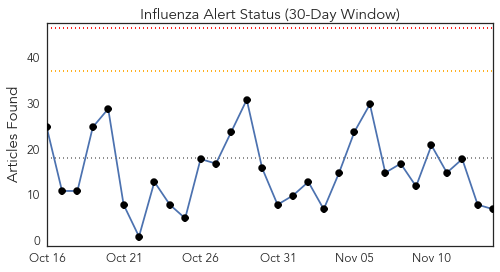
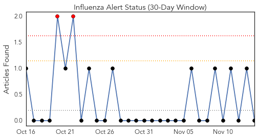
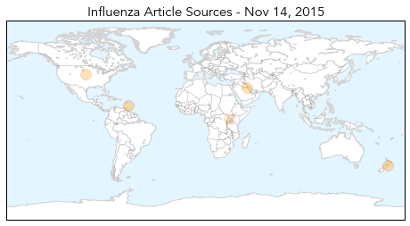
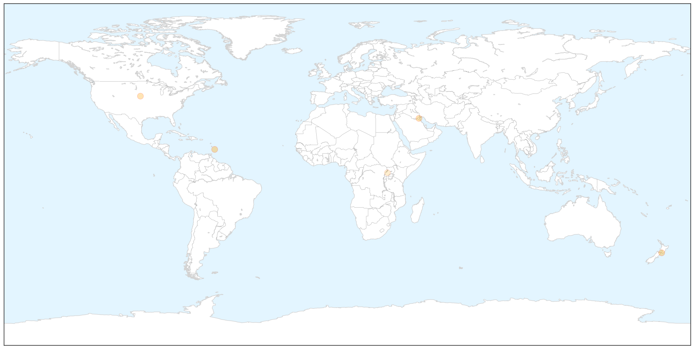
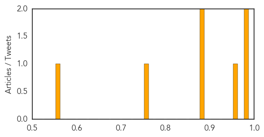

Hepatitis
30-Day Web Trend
0 alerts, 0 warnings

30-Day Twitter Trend
0 alerts, 0 warnings

Article Locations


Article Confidences

Top Articles:
- 0.976
- Steps to contain hepatitis A in Thrissur
- 0.973
- Hepatitis Advisory From Seneca County
- 0.806
- Hepatitis A Infection in Waterloo, Seneca County, New York McDonalds Employee
- 0.640
- One-step test for hepatitis C virus infection developed by UC Irvine Health researchers
- 0.502
- Study Sums Up Health Issues for New Refugee Children of US
Top Tweets:
-
No tweets found for Nov 14, 2015
Influenza
30-Day Web Trend
0 alerts, 0 warnings

30-Day Twitter Trend
6 alerts, 0 warnings

Article Locations

X

Article Confidences
Top Articles:
- 0.989
- Influenza A H1N1 Virus Not Bird Flu
- 0.978
- Flu Clinics for Rockland Residents
- 0.964
- Wellington-Halton Hills MPP takes shot in the arm against flu
- 0.899
- Defense Ministry intends to cut overseas treatment cases
- 0.887
- 5 myths about the common cold: Guest commentary
- 0.755
- 2015 flu shot numbers down considerably in the Cypress Health Region
- 0.559
- Over 200 children get treatment
Top Tweets:
-
No tweets found for Nov 14, 2015